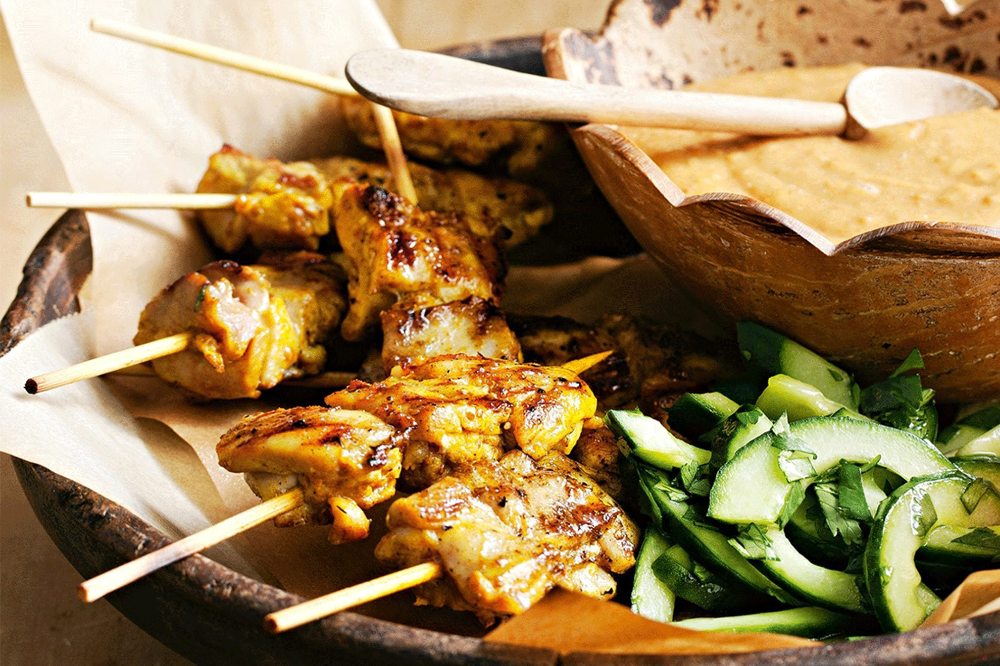

Satay Chicken Skewers recipe
Picture this: early 19th-century Java, where street vendors had a brilliant idea—skewer marinated meat, grill it over charcoal, and serve it with a punchy peanut sauce.
This genius move combined local spices with foreign kebab traditions, creating satay chicken skewers.
The peanut sauce—creamy, spicy, and irresistible—became the star.
Satay spread across Southeast Asia, each region adding its twist, before conquering global menus.
So, when you enjoy a satay skewer, you're savoring a delicious piece of culinary history from Javanese street vendors to your plate.
INGREDIENTS
- 2 tsp coriander seeds
- 130g (1/2 cup) crunchy peanut butter
- 2 tbsp brown sugar
- 2 tbsp soy sauce
- 1 1/2 tbsp lime rind, finely grated
- 2 tbsp lime juice
- 1 1/2 tsp fish sauce
- 1 long fresh red chilli, finely chopped
- 2 garlic cloves, crushed
- 1/2 tsp sesame oil
- 1 tsp ground turmeric
- 80ml (1/3 cup) coconut cream
- 500g chicken thighs, cut into 3cm pieces
- Steamed rice, to serve (optional)
- Lime wedges, to serve (optional)
- pickled cucumber
- 60ml (1/4 cup) rice wine vinegar
- 1 tbsp caster sugar
- 2 Lebanese cucumbers, halved, deseeded, thinly sliced diagonally
- 1/2 tsp salt
- 2 tbsp fresh coriander, chopped
Steps
- For the cucumber, stir the vinegar and sugar together in a bowl until sugar has dissolved.
Stir in the cucumber and salt. Set aside, stirring occasionally, for 30 minutes or until lightly pickled.
Drain and place cucumber and coriander in a bowl
- Meanwhile, cook the coriander seeds in a frying pan over medium heat for 1-2 minutes or until aromatic and toasted.
Transfer to a mortar and pound with a pestle until crushed.
- For the sauce, process the peanut butter, sugar, soy sauce, lime rind and juice, fish sauce, chilli, garlic, oil, 1 tsp of the crushed coriander and half the turmeric in a food processor until smooth.
Transfer to a saucepan. Cook over low heat for 1-2 minutes or until warmed. Stir in coconut cream.
- Preheat a barbecue flat plate on medium. Combine the remaining turmeric and coriander in a bowl.
Add the chicken. Toss to coat. Thread about 3 chicken pieces each onto 12 presoaked bamboo skewers.
- Barbecue the skewers for 3-4 minutes each side or until cooked through. Serve with sauce, cucumber, rice and lime, if using.
ANd now you have got your flavorful and mouthwatering chicken skewers!
